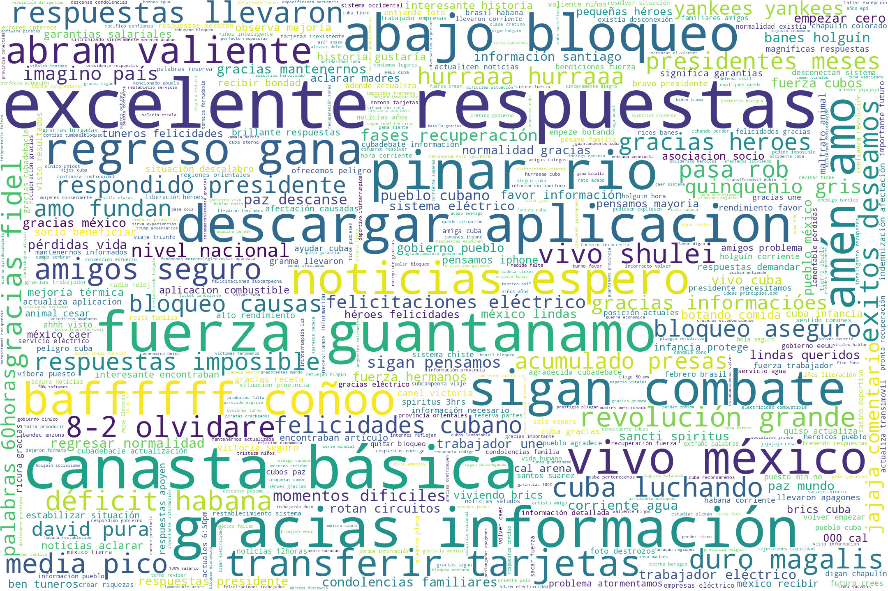

Cuba Comenta
En
Cubadebate
se comenta sobre:
China emite una alerta tras confirmarse un caso sospechoso de peste bubónica
Médicos cubanos apoyarán lucha contra la COVID-19 en países de África
La Habana pasa a la primera fase de recuperación a partir del 3 de julio; el resto del país excepto Matanzas a la segunda (+ PDF)
Haila regala a los niños “Un canto a la sonrisa” (+ Video)
Dictadura boliviana se dispone a detener a candidato del MAS que lidera intención de voto
COVID-19 en el mundo: EEUU puede pasar de 40 mil a 100 mil casos diarios, avisa experto del Gobierno
Boicot a Facebook por no comprometerse contra el odio: Las grandes marcas dejan de hacer publicidad en redes sociales
Morales Ojeda: Estábamos convencidos de que La Habana podría entrar en la primera fase en los próximos días
¿Producir todos los alimentos que necesitamos con la misma economía, con las mismas estructuras y haciendo lo mismo? III. Querer y tener
Luego de 23 años, gemelos se encuentran en Brasil gracias a una fotografía
Cuba proseguirá trabajando en favor de la unidad del Caribe, destaca Rodríguez Parrilla
Jorge Fornet: Espero que volvamos a tener la cara desnuda y nos haga pensar en aquellas cosas esenciales
Una pinza letal presiona a los países pobres: COVID-19 y deuda devastadora
COVID-19: Flashazos internacionales (IX)
Abre en La Habana la edición 22 del Festival del Habano: Crecimiento de ventas en 2019, novedades en 2020 (+ Fotos)
Indígenas prometen llevar a Bolsonaro ante los tribunales por comentarios racistas
Trump ataca otra vez: Sancionan a seis buques por transportar petróleo de Venezuela a Cuba
Yenisel Valdés: "Trabajar con los Van Van fue una experiencia increíble"
Word Cloud (Nube de Palabras)
